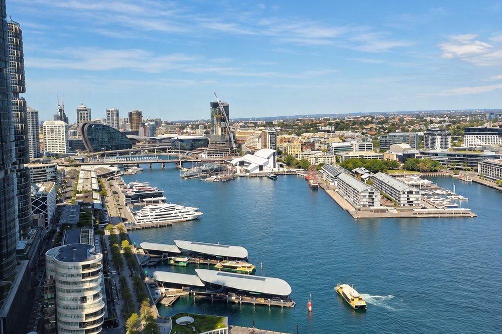

ICC Sydney
ICC Sydney
Sydney · Venue finding
Conference & Event Venues in Sydney
Tell us what you need in Sydney. Shortlist within 48 hours, free to you.
Venue finding since 1989
Shortlist within 48 hours
Free to you
Featured venues
A closer look at a few we know well.
Venues we have worked with for years, and what each one is really good for. We source right across the market, so treat this as a starting point rather than a list.
ICC Sydney01 / Featured venue
ICC Sydney
Australia's premier convention and exhibition centre, home to Australia's largest ballroom at 2,784 theatre under a 9 metre ceiling, 70 meeting rooms and 32,600 square metres of exhibition halls. Built for large-scale conferences, exhibitions and summits.
Enquire about ICC Sydney Hyatt Regency Sydney
Hyatt Regency Sydney02 / Featured venue
Hyatt Regency Sydney
Australia's largest hotel, suited to big residential conferences where delegates stay on site, with extensive event space beside the water.
Enquire about Hyatt Regency Sydney Shangri-La Sydney
Shangri-La Sydney03 / Featured venue
Shangri-La Sydney
Harbour-view luxury with a flexible grand ballroom, well suited to premium conferences and gala dinners overlooking the bridge and Opera House.
Enquire about Shangri-La Sydney The Fullerton Hotel Sydney
The Fullerton Hotel Sydney04 / Featured venue
The Fullerton Hotel Sydney
Heritage grandeur in the former GPO on Martin Place, with the largest pillarless hotel ballroom in Sydney. Suited to galas, conferences and prestige functions in the CBD.
Enquire about The Fullerton Hotel Sydney W Sydney
W Sydney05 / Featured venue
W Sydney
A design-led waterfront hotel on Darling Harbour, modern and style-forward, well suited to product launches, brand events and conferences that want a contemporary edge.
Enquire about W Sydney Doltone House
Doltone House06 / Featured venue
Doltone House
A dedicated events specialist rather than a hotel, with harbour and city settings for boardroom meetings through to large conferences and functions.
Enquire about Doltone HouseFirsthand
Sydney venues we have walked through.
A few of the Sydney venues we’ve been through ourselves. For each one you’ll find the venue’s own published capacities, our photographs from the day, and an honest word about what it suits and what it doesn’t.
-
 Crown Towers Sydney
One ballroom at 390 theatre and two rooms that hold forty. A luxury hotel for a senior audience rather than a full conference.
Inspected by CVBS
Crown Towers Sydney
One ballroom at 390 theatre and two rooms that hold forty. A luxury hotel for a senior audience rather than a full conference.
Inspected by CVBS
-
 Pullman Quay Grand Sydney Harbour
An all suite hotel on East Circular Quay with three bookable spaces, the largest seating 70. Lovely for a board dinner or an executive program, rather than a conference.
Inspected by CVBS
Pullman Quay Grand Sydney Harbour
An all suite hotel on East Circular Quay with three bookable spaces, the largest seating 70. Lovely for a board dinner or an executive program, rather than a conference.
Inspected by CVBS
Sydney, in short
Sydney's largest conference venue is ICC Sydney at Darling Harbour. Its Grand Ballroom seats 2,784 theatre style under a 9 metre ceiling and is, on ICC's own description, the largest ballroom in Australia. Above 2,000 delegates seated in one room the market is small, and none of it is a hotel: Sydney Showground's Dome takes 7,000, the Opera House Concert Hall 2,102, and Sydney Town Hall's Centennial Hall 2,008.
Between 500 and 1,500 delegates the constraint becomes accommodation. The Fullerton Hotel Sydney holds 1,400 theatre across 1,058 pillarless square metres, the largest pillarless hotel ballroom in the city. Hilton Sydney at 1,100 and Hyatt Regency at 1,000 are the only other Sydney hotels seating a thousand or more in one room, and Hyatt is the one that can run two at once. Below 400 the CBD carries the deepest supply, and the constraint stops being capacity. It becomes availability on your dates, and the rate. See the venues we know well.
Sydney is one of the most competitive venue markets in the country, and the best of it is not on public display. The strongest CBD conference floors and harbourside function spaces book out early and rarely show their real availability, or their best rate, online. We source right across the city, from Circular Quay and Darling Harbour to North Sydney and the airport precinct, and negotiate directly with the people who run them.
What we source in Sydney
- CBD conference hotels and dedicated conference centres
- Harbourside and rooftop function and event spaces
- Delegate room blocks across the CBD and inner city
- Airport-precinct venues for fly-in, fly-out meetings
Sydney site visits
The rooms we have stood in.
Not a list of everything in Sydney. The rooms one of us has walked, when we were there, and what we noticed that a floor plan will not tell you.
The part a capacity chart cannot tell you. A floor plan will give you the square metres. It will not tell you where the pre-function space bottlenecks once the room is full, which loading dock your production crew will struggle with, or how the light falls in the ballroom at four in the afternoon. That is what we are for, and it is the reason we walk these rooms rather than read about them.
By delegate numbers
Every Sydney venue we publish, and what each one is for.
Grouped by the only question you can answer on day one, which is how many people are coming. Every figure is the one the venue publishes for itself, read off its own capacity chart, fact sheet or floor plan. The sentence under each name is ours.
Narrow these by your numbers and your layout
A thousand delegates and above
The top of the market, and it is small. Above a thousand seated in one room you are choosing between a handful of buildings, and most of them are not hotels.
-
Sydney Showground
Sydney Olympic Park
Thirty thousand square metres of pillar free hall space. Built for trade shows, consumer expos and very large plenaries, with parking and rail at the door.
- 7,000 theatre
- in The Dome
- 7,200 sqm
- floor area
- 42.0 m
- at the dome apex; 9m to the rigging star
- 5,045 theatre
- in Hall 6
-
ICC Sydney
Darling Harbour
Australia's largest ballroom, beside a 2,500 seat theatre, an 8,000 seat plenary theatre and 32,600 sqm of exhibition halls. The only Sydney venue that runs a plenary, a trade exhibition and concurrent breakouts on the same day.
- 2,784 theatre
- in Grand Ballroom
- 9.0 m
- ceiling
- 70
- event rooms
- 1,400 theatre
- in Parkside Ballroom
-
Sydney Opera House
Circular Quay
Fixed seat auditorium seating 2,102 facing the stage and 2,664 in the round, for plenaries and awards only. The Yallamundi Rooms on the eastern podium are the purpose built conference space, at 200 theatre.
- 2,102 theatre
- in Concert Hall
- 15.0 m
- over the centre line
- 200 theatre
- in Yallamundi Rooms
-
Sydney Town Hall
Sydney CBD
A 1,020 sqm heritage hall seating 2,008 across the floor and first floor galleries. The largest conference plenary in the CBD, and the only one above 2,000.
- 2,008 theatre
- in Centennial Hall
- 913 sqm
- floor area
- 20.0 m
- ceiling
- 9
- event rooms
- 800 theatre
- in Lower Town Hall
-
Royal Randwick Racecourse
Eastern Suburbs
A 2,222 sqm ground floor pavilion with tiered gallery rooms above it. Suits gala dinners, expos and awards nights that need parking close to the city.
- 1,692 theatre
- in Winx Pavilion
- 6.2 m
- ceiling
- 17
- event rooms
- 1,100 theatre
- in The Ballroom, Queen Elizabeth II Grandstand
-
Le Montage
Lilyfield
Very large ballroom for gala dinners and big plenaries, with free on site parking. Inner west site with no station nearby, so delegates need cars or coach transfers.
- 1,600 theatre
- in Montage Ballroom
- 6.0 m
- Navarra publishes up to 6m for the venue, not for the ballroom alone
- 11
- event rooms
- 350 theatre
- in The Gallery
-
Sydney Event Centre
Pyrmont
Purpose built theatre and flat floor hall at The Star, handling awards nights, concerts and large plenaries in the one room. Capacity chart still published under its former name, The Star Event Centre.
- 1,460 theatre
- in Main Room
- 1,077 sqm
- floor area
- 12.0 m
- ceiling
- 100 theatre
- in The Attic
-
The Fullerton Hotel Sydney
Sydney CBD
The largest pillarless hotel ballroom in Sydney at 1,058 sqm, in the former GPO on Martin Place. Suits conference plenaries, awards nights and gala dinners in the CBD.
- 1,400 theatre
- in The Grand Ballroom
- 1,058 sqm
- floor area
- 6.0 m
- ceiling
- 416
- guest rooms
- 15
- event rooms
- 350 theatre
- in Heritage Ballroom
-
Accor Stadium
Sydney Olympic Park
Column free stadium ballroom taking large conferences, exhibitions and gala dinners, dividing into thirds with room for 46 expo booths. Not available on major match and concert days.
- 1,200 theatre
- in Millennium Room
- 1,200 sqm
- floor area
- 6.0 m
- the stadium quotes both 6m and 6.5m for this room
- 16
- event rooms
- 1,000 theatre
- in Members' Room
-
Hilton Sydney
Sydney CBD
An 806 sqm ballroom with six metre ceilings and 28 event spaces across the hotel. One of only three Sydney hotels seating more than 1,000 in a single room.
- 1,100 theatre
- in Grand Ballroom
- 920 sqm
- floor area
- 6.0 m
- ceiling
- 28
- event rooms
-
Hyatt Regency Sydney
Darling Harbour
Australia's largest hotel by room count, so a full residential conference and its accommodation sit on the one site. Two ballrooms of near identical size run concurrent streams.
- 1,000 theatre
- in Grand Ballroom
- 850 sqm
- floor area
- 8.5 m
- ceiling
- 878
- guest rooms
- 23
- event rooms
- 1,000 theatre
- in Maritime Ballroom
Five hundred to a thousand
The band where accommodation usually decides it. Plenty of rooms hold the numbers; far fewer hold the numbers and the delegates in the same building.
-
Doltone House Jones Bay Wharf
Pyrmont
Heritage listed waterfront wharf that splits into two rooms. Suits gala dinners, conferences and exhibitions on the water, without hotel constraints.
- 900 theatre
- in Heritage Wharf
- 8
- event rooms
- 130 theatre
- in Loft
-
Curzon Hall
Marsfield
Heritage castle with a large pavilion and free parking, for gala dinners and full day conferences. Weekend wedding demand pushes corporate work midweek, and it is a long drive from the CBD.
- 890 theatre
- in Lady Mary's Pavilion
- 660 sqm
- floor area
- 7.0 m
- Navarra publishes up to 7m for the venue, not for the pavilion alone
- 11
- event rooms
- 360 theatre
- in Grand Banquet Room
-
Sheraton Grand Sydney Hyde Park
Sydney CBD
4,435 sqm of event space across 20 rooms, the deepest breakout inventory of any CBD hotel. Built for multi day conferences running concurrent streams.
- 850 theatre
- in Grand Ballroom
- 650 sqm
- floor area
- 4.1 m
- ceiling
- 558
- guest rooms
- 20
- event rooms
- 200 theatre
- in Castlereagh Room
-
Sydney Cricket Ground
Moore Park
Purpose built dining and conference room in the Noble Bradman Messenger stand. This is a function room, not the seating bowl. Not released on cricket and AFL match days.
- 820 theatre
- in Noble Dining Room
- 25
- event rooms
- 200 theatre
- in Captains Bar
-
Four Seasons Hotel Sydney
The Rocks
A 683 sqm ballroom with a 5.6m ceiling seating 800 theatre. Breakouts sit two levels above on Level Two, so delegates move between floors.
- 800 theatre
- in Grand Ballroom
- 683 sqm
- floor area
- 5.6 m
- ceiling
- 531
- guest rooms
- 11
- event rooms
- 200 theatre
- in Gallery Rooms 1, 2 and 3
-
Shangri-La Sydney
The Rocks
Views over the bridge and Opera House from a divisible grand ballroom. Suits premium conferences, gala dinners and incentive groups staying in house.
- 800 theatre
- in Grand Ballroom
- 670 sqm
- floor area
- 4.15 m
- ceiling
- 564
- guest rooms
- 24
- event rooms
- 160 theatre
- in Cambridge Rooms
-
Sofitel Sydney Wentworth
Sydney CBD
A 629 sqm pillarless ballroom with 15 event spaces and 436 rooms above it on Phillip Street. Suits mid size residential conferences and gala dinners.
- 800 theatre
- in Wentworth Ballroom
- 629 sqm
- floor area
- 5.3 m
- ceiling
- 436
- guest rooms
- 15
- event rooms
- 201 theatre
- in Brisbane Room
-
Luna Park Sydney
Milsons Point
Harbourside auditorium plus the Crystal Palace ballrooms, with the park available for exclusive use. Conference by day and the evening event on the same site.
- 750 theatre
- in The Big Top
- 9.0 m
- at the eaves; 14m at the centre
- 8
- event rooms
- 600 theatre
- in Crystal Palace Grand Ballroom
-
Waterview in Bicentennial Park
Sydney Olympic Park
Pillarless room with 6.6 metre ceilings and parkland views, strong for launches and large plenaries. Sits in Sydney Olympic Park, so most CBD delegates face a train or coach transfer.
- 605 theatre
- in Lake Room
- 6.6 m
- ceiling
- 3
- event rooms
- 350 theatre
- in Park Room
-
Sydney Masonic Centre
Sydney CBD
A dedicated CBD conference centre with a 555 sqm flat floor hall and a separate 600 seat tiered auditorium. Plenary and breakouts in one building, no hotel traffic through the foyer.
- 550 theatre
- in Banquet Hall
- 555 sqm
- floor area
- 7.0 m
- ceiling
- 12
- event rooms
- 600 theatre
- in Grand Lodge
-
Novotel Sydney Olympic Park
Sydney Olympic Park
Freshwater Ballroom handles full day conferences and gala dinners and splits into three. Sits beside Accor Stadium and Sydney Showground, so check dates against their event calendars.
- 550 theatre
- in Freshwater Ballroom
- 414 sqm
- floor area
- 4.5 m
- ceiling
- 177
- guest rooms
- 12
- event rooms
- 150 theatre
- in Parklands Room
-
Doltone House Hyde Park
Sydney CBD
Pillarless ballroom facing Hyde Park with arched windows and five metre ceilings. Only three bookable spaces, so concurrent breakouts are limited.
- 500 theatre
- in Ballroom
- 5.0 m
- ceiling
- 3
- event rooms
- 115 theatre
- in Manhattan
-
W Sydney
Darling Harbour
A single dedicated event floor on Level 5, design led throughout. Strong for product launches and brand events that need to look current.
- 500 theatre
- in Great Room
- 592 sqm
- floor area
- 5.6 m
- ceiling
- 588
- guest rooms
- 8
- event rooms
- 100 theatre
- in Studio 2
-
Rydges World Square
Sydney CBD
A divisible lobby level ballroom with 458 rooms above it. Dependable mid market choice for residential conferences in the CBD.
- 500 theatre
- in Grand Sydney Ballroom
- 500 sqm
- floor area
- 3.0 m
- ceiling
- 458
- guest rooms
- 12
- event rooms
- 86 theatre
- in The Terrace
Two hundred and fifty to five hundred
The deepest supply in the city, and the band where the decision stops being about capacity. It becomes availability on your dates, and what the venue will do on the rate.
-
Aerial UTS Function Centre
Surry Hills & Central
Five equal rooms on level 7 in Ultimo that open into one 494 sqm pillar free space. Plenary and matching breakouts without moving floors.
- 450 theatre
- in Full venue, five rooms combined
- 494 sqm
- floor area
- 5
- event rooms
-
Sofitel Sydney Darling Harbour
Darling Harbour
Directly adjoining ICC Sydney, which makes it the natural accommodation and gala dinner partner for convention centre programs.
- 450 theatre
- in Magnifique Ballroom
- 497 sqm
- floor area
- 5.0 m
- ceiling
- 590
- guest rooms
- 7
- event rooms
- 103 theatre
- in Byrne
-
Dockside
Darling Harbour
Waterfront room on the balcony level of Cockle Bay Wharf, walkable from Town Hall station and the ICC. No floor area or ceiling height is published.
- 440 theatre
- in Cockle Bay Room
- 2
- event rooms
- 270 theatre
- in Darling Room
-
South Eveleigh
Redfern and Eveleigh
The old Australian Technology Park conference centre no longer operates. Event space is now run by independent tenants inside the heritage Locomotive Workshop, the largest being The Eveleigh.
- 400 theatre
- in The Eveleigh
- 6
- event rooms
-
Swissotel Sydney
Sydney CBD
A heritage listed pillarless ballroom of 400 sqm on Level 8. The ceiling drops to 2.7m in parts, which limits staging and rear sightlines.
- 400 theatre
- in Blaxland Ballroom
- 400 sqm
- floor area
- 4.35 m
- at the highest point; 2.7m at the lowest
- 369
- guest rooms
- 8
- event rooms
- 100 theatre
- in Maple Room
-
Crown Sydney
Barangaroo
Six star positioning on the Barangaroo waterfront, with eleven bookable spaces including restaurant private dining rooms. Suits executive programs and prestige dinners rather than large plenaries.
- 390 theatre
- in Pearl Ballroom
- 573 sqm
- floor area
- 4.7 m
- ceiling
- 349
- guest rooms
- 11
- event rooms
-
Novotel Sydney International Airport
Sydney Airport
Pillar free ballroom and ten smaller rooms at Wolli Creek, on the airport rail line. Built for fly in, fly out national meetings and training days.
- 380 theatre
- in Grand Ballroom
- 320 sqm
- floor area
- 4.0 m
- ceiling
- 271
- guest rooms
- 11
- event rooms
- 100 theatre
- in Protea Room
-
Amora Hotel Jamison Sydney
Sydney CBD
A pillarless ballroom that divides in two, with 415 rooms above it near Wynyard. Good value for mid size residential conferences.
- 370 theatre
- in Whiteley Ballroom
- 415
- guest rooms
- 8
- event rooms
- 70 theatre
- in Hart Room
-
Australian National Maritime Museum
Darling Harbour
Waterfront museum precinct for gala dinners, launches and awards, with a rigging truss and 13 metre ceilings. Many of its other spaces are outdoor terraces or historic vessels, so weather governs them.
- 350 theatre
- in Lighthouse Gallery
- 400 sqm
- floor area
- 13.0 m
- ceiling
- 11
- event rooms
-
InterContinental Sydney
Circular Quay
2,361 sqm of meeting space across 14 rooms in the heritage Treasury Building. Suits board level programs that want Circular Quay on the invitation.
- 350 theatre
- in Boronia Ballroom
- 497 sqm
- floor area
- 4.3 m
- ceiling
- 509
- guest rooms
- 14
- event rooms
- 232 theatre
- in Acacia Room
-
Kimpton Margot Sydney
Sydney CBD
Heritage mezzanine plenary separating into three rooms, so conference and breakouts sit in one Art Deco building. Only theatre and cabaret figures are published.
- 280 theatre
- in The Hammond Room
- 344 sqm
- floor area
- 172
- guest rooms
- 6
- event rooms
-
The Grace Hotel
Sydney CBD
The 371 sqm headline is the whole Level 2 floor with five rooms combined, not a purpose built ballroom. A 2.4m ceiling rules out raised staging.
- 279 theatre
- in Wilarra-Jarara
- 371 sqm
- floor area
- 2.4 m
- ceiling
- 387
- guest rooms
- 11
- event rooms
- 105 theatre
- in Balinga
-
PARKROYAL Darling Harbour
Darling Harbour
A 208 sqm pillarless room divisible into three with a 3.4m ceiling and a naturally lit pre function area. Published cocktail capacity is only 150.
- 273 theatre
- in Blackwattle Bay Room
- 208 sqm
- floor area
- 3.4 m
- ceiling
- 7
- event rooms
- 90 theatre
- in Rose Bay Room
-
Rydges Sydney Central
Surry Hills & Central
Main plenary with a retractable wall, natural light at both ends and a large pre function area for registration. The 2.4 metre ceiling constrains tall staging and rigging.
- 270 theatre
- in Oxford I and II
- 253 sqm
- floor area
- 2.4 m
- ceiling
- 309
- guest rooms
- 15
- event rooms
- 175 theatre
- in Crown Room
-
Sydney Harbour Marriott Hotel at Circular Quay
Circular Quay
The largest space is 288 sqm at 270 theatre, formed from two adjoining sections. A 2.8m ceiling constrains raised staging and large format screens.
- 270 theatre
- in Thomas Keneally I and II
- 288 sqm
- floor area
- 2.8 m
- ceiling
- 595
- guest rooms
- 14
- event rooms
- 190 theatre
- in Henry Lawson I and II
-
Taronga Zoo Sydney
Mosman
Harbour view zoo venue for dinners, awards and launches. The Dalang Ballroom is the only large indoor room, and the lawns that take bigger crowds are outdoors and weather dependent.
- 250 theatre
- in Dalang Ballroom
- 13
- event rooms
-
Pullman Sydney Hyde Park
Sydney CBD
A mid size conference floor opposite Hyde Park with 241 rooms above. Suits conferences and dinners to 250 that want the CBD without the harbour premium.
- 250 theatre
- in Ibis Room
- 264 sqm
- floor area
- 241
- guest rooms
- 8
- event rooms
- 100 theatre
- in Cook Room
Under two hundred and fifty
Board programs, executive meetings, training and private dinners. Smaller rooms, and the building around them matters more than the seat count.
-
L'Aqua
Darling Harbour
Rooftop level of Cockle Bay Wharf, same operator as Dockside. Suits smaller launches and dinners with a harbour outlook.
- 180 theatre
- in Terrace Room
- 2
- event rooms
- 100 theatre
- in Gold Room
-
Pullman at Sydney Olympic Park
Sydney Olympic Park
Suits mid size conferences and dinners to about 140 in Nexus, which splits in two. Only five meeting spaces in total, so concurrent breakout capacity is limited.
- 140 theatre
- in Nexus 1 and 2
- 156 sqm
- floor area
- 3.8 m
- ceiling
- 218
- guest rooms
- 5
- event rooms
- 110 theatre
- in Echelon
-
Novotel Sydney Darling Square
Darling Harbour
Next door to ICC Sydney. Built for small meetings, training days and delegate accommodation rather than plenaries.
- 130 theatre
- in Darling Harbour Room
- 168 sqm
- floor area
- 2.4 m
- ceiling
- 230
- guest rooms
- 6
- event rooms
- 60 theatre
- in Little Pier Room
-
View Sydney
North Sydney
A compact North Sydney conference floor across the bridge. Suits north shore team meetings and seminars under 120.
- 120 theatre
- in Bradfield Rooms
- 162 sqm
- floor area
- 7
- event rooms
- 45 theatre
- in Lavender Bay Rooms
-
Pullman Quay Grand Sydney Harbour
Circular Quay
An all suite hotel on East Circular Quay with three small event spaces. The right building for an executive program or a board dinner on the harbour, not for a conference.
- 70 theatre
- in Conference Room
- 85 sqm
- floor area
- 3
- event rooms
- 70 theatre
- in Acapulco El Vista Bar + Lounge
-
QT Sydney
Sydney CBD
No plenary space. The largest dedicated meeting room seats 50 theatre and the biggest single booking is Gowings at 330 cocktail. Suits boards and product launches.
- 50 theatre
- in Market Room
- 79 sqm
- floor area
- 198
- guest rooms
- 8
- event rooms
- 56 theatre
- in Screening Room and Reel Bar
No theatre figure published
These venues publish capacities for other layouts but not for theatre seating. We would rather show you the gap than fill it with a number the venue has never put its name to. If one of these is on your list, ask us and we will get the figure from them.
-
Hordern Pavilion
Moore Park
A single 3,600 sqm hall with 3,100 sqm usable. Built for exhibitions, trade shows, large dinners and standing events rather than multi stream conferences.
- 1,400 banquet
- in Main Hall
- 3,600 sqm
- floor area
- 13.0 m
- to the dome; 6.2m under the trusses between columns
-
Doltone House Darling Island
Pyrmont
Large waterfront room with floor to ceiling windows, best for gala dinners and big cocktail receptions. No theatre or classroom figures are published, so conference setups need confirming.
- 750 banquet
- in Darling Island
- 3
- event rooms
- 190 theatre
- in Parkview
-
The Epping Club
Epping
Modern club ballroom that partitions, with in house AV and parking. Only a generic seated figure is published, no theatre or classroom, and it is well outside the CBD.
- 500 banquet
- in The Grand Ballroom
- 5
- event rooms
-
Ovolo Woolloomooloo
Woolloomooloo
Character space on the historic finger wharf, better for dinners and cocktail functions than theatre style plenaries. Ovolo publishes maximum guest numbers only, not full setup charts.
- 120 banquet
- in Piper Room
- 100
- guest rooms
- 12
- event rooms
- 150 theatre
- in The Burbs
-
The EVE Hotel Sydney
Redfern and Eveleigh
A 102 room hotel in the Wunderlich Lane precinct between Redfern and Surry Hills, built for small residential programs, board level meetings and private dinners rather than plenaries. It publishes no setup capacities, floor areas or ceiling heights at all, and the only space the hotel runs itself is a boardroom for fourteen. Both restaurant venues changed operators in August 2026 and the replacements open later in the year, so the rooftop hire capacity is unsettled until they do.
- 14 boardroom
- in Rooftop Boardroom
- 102
- guest rooms
-
Museum of Contemporary Art Australia
The Rocks
Ground level hall with 7 metre ceilings and a harbour terrace, used for cocktail launches and dinners. The MCA publishes no capacities for it, and gallery programming limits available dates.
- 7.0 m
- ceiling
- 5
- event rooms
- 200 theatre
- in Harbourside Room
-
Novotel Sydney Central
Surry Hills & Central
Convenient for delegates arriving at Central Station, with meeting space over three levels. Capacities are published room by room rather than as one chart, and the Ballroom's own page does not load.
- 265 sqm
- floor area
- 255
- guest rooms
- 14
- event rooms
- 120 theatre
- in Port Jackson Room
Sources last read 14 August 2026 and 5 September 2026. This is not every venue in Sydney. It is the part of what we know that we can put a source against, and we book venues every week that are not on it. Tell us what you are planning and we will go looking.
Where to start
Not sure where in Sydney your event belongs?
A quick steer, based on what you are running. Tell us the detail and we will shortlist what suits it, rather than the obvious names.
Based on venue suitability alone.
Large conferences and exhibitions
ICC Sydney, Hyatt Regency, The Fullerton
Premium gala dinners
Shangri-La, Crown Sydney, Sofitel
Residential conferences (delegates stay on site)
Hyatt Regency, Sofitel, The Fullerton
Fly-in, fly-out meetings
Sydney Airport precinct hotels
Brand events and product launches
W Sydney, Doltone House, harbourside venues
Local knowledge
Where in Sydney to hold it.
The precinct you choose shapes everything from how easily delegates arrive to what you will pay for dinner. These are the ones we source across most, and what each is good for.
Sydney CBD
The default for corporate conferences. Walkable to transport, accommodation and dining, with the widest choice of hotels and meeting space.
Darling Harbour
Home to ICC Sydney and the largest conference hotels. The precinct for big conferences, exhibitions and residential programs.
Circular Quay
Harbour-front prestige beside the Opera House and the ferries. Suited to premium events that want the postcard Sydney backdrop.
Barangaroo
The newest waterfront precinct, anchored by Crown Sydney. Polished and corporate, good for executive events and high-end functions.
North Sydney
Across the bridge and handy for north-shore teams, with a growing cluster of meeting hotels and easy transport.
Sydney Airport
Mascot and the airport precinct suit fly-in, fly-out meetings and interstate delegates who land, meet and leave the same day.
Surry Hills and Central
Creative, design-led spaces near Central station. A fit for brand events, launches and offsites with character.
The Rocks
Historic harbourside Sydney, home to Shangri-La. Heritage atmosphere and harbour views for conferences and gala dinners.
Why CVBS in Sydney
Where you put a Sydney event changes how the day feels.

One brief. A real person on the other end.
Everything above this point is information. It is genuinely useful, and no other venue finder in Australia publishes it. But it is not the thing you are actually buying.
What you are buying is someone who has already had the conversation with the person who holds that room, knows what they will move on and when, and will pick up the phone rather than send you a portal login. Whoever takes your Sydney brief stays your point of contact from the first call through to the final invoice.
Karen, Anthony, Chantelle and RychelleSourcing Australian conference venues since 1989
Venues we can speak for
Sydney is really six or seven precincts, and the one you choose decides how far people walk, what they do at six o'clock and what the accommodation costs. We start there rather than with a list of rooms.
The drawbacks as well as the pitch
Every venue has something worth knowing before you sign. A difficult load-in, a low ceiling, a pre-function space that struggles once the room is full. You will hear that from us at shortlist, not on the day.
Free to you
There is no fee for our service. The sourcing, the local knowledge and the negotiating are all included, and the rate you end up with is usually better than booking direct.
Worth knowing first
The parts of Sydney we would raise before you commit.
No destination is right for every brief, and the useful conversation is about where the limits are. These are the ones that change a Sydney program most often.
Above 2,000 seated, none of it is a hotel
ICC Sydney’s Grand Ballroom at 2,784 is the top of the hotel style market. Beyond that you are choosing between Sydney Showground’s Dome, the Opera House Concert Hall and Sydney Town Hall, none of which are conference buildings, and all of which need a room block sourced separately.
Between 500 and 1,500 the accommodation decides it
Plenty of Sydney rooms hold those numbers. Far fewer hold the numbers and the delegates in the same building, and the ones that do book out first. If your program is residential in that band, the room block is the thing to secure before the ballroom.
Sydney is really six or seven precincts
Darling Harbour, the CBD, Circular Quay, Barangaroo, North Sydney and the airport precinct behave like different cities for the purposes of a program. The precinct decides how far delegates walk, what they do at six o’clock and what dinner costs, and it is a bigger decision than the venue.
FAQ
Sydney venue finding, common questions
How much does it cost to use CVBS to find a venue in Sydney?
Nothing. Our Sydney venue finding service is free to you, and the rate we negotiate is usually better than booking direct. If you would like the detail, it is set out on how we are paid.
How quickly can you find Sydney venues?
We deliver a shortlist of matching Sydney venues within 48 hours of receiving your brief, with rates and inclusions ready to compare. If your dates are tight or unusual, tell us in the brief and we will call the venues rather than email them.
Do you cover group accommodation in Sydney as well as venues?
Yes. We can package delegate or group accommodation in Sydney with your venue as a single negotiation, which often strengthens the rate on both. See group accommodation for how that works.
What is the largest conference venue in Sydney?
ICC Sydney at Darling Harbour. Its Grand Ballroom seats 2,784 theatre style under a nine metre ceiling and is, on ICC’s own description, the largest ballroom in Australia. It sits alongside 32,600 square metres of exhibition halls and 70 meeting rooms.
Which Sydney hotel has the largest ballroom?
The Fullerton Hotel Sydney, whose Grand Ballroom holds 1,400 theatre across 1,058 pillarless square metres in the former GPO on Martin Place. Hilton Sydney at 1,100 and Hyatt Regency at 1,000 are the only other Sydney hotels seating a thousand or more in one room, and Hyatt is the one that can run two at once.
Where should a 500 delegate conference be held in Sydney?
It depends whether the delegates are staying overnight. If they are, Darling Harbour is usually the answer, because the large conference hotels and ICC sit in the same precinct. If they are not, the CBD gives you a much wider choice and the constraint stops being capacity and becomes availability on your dates.
Which Sydney precinct suits a fly in, fly out meeting?
Mascot and the airport precinct, where interstate delegates can land, meet and leave the same day without entering the city. For a half day meeting with a senior audience, North Sydney and the CBD both work if the flights allow it.
Can you help with a Sydney offsite outside the city?
Yes. The Hunter Valley is a little over two hours north and the Blue Mountains about ninety minutes west, and both do the residential leadership program better than the city does. We source across all three.
Ready when you are
Planning something in Sydney? Tell us about it.
You will have Sydney options to consider within 48 hours.